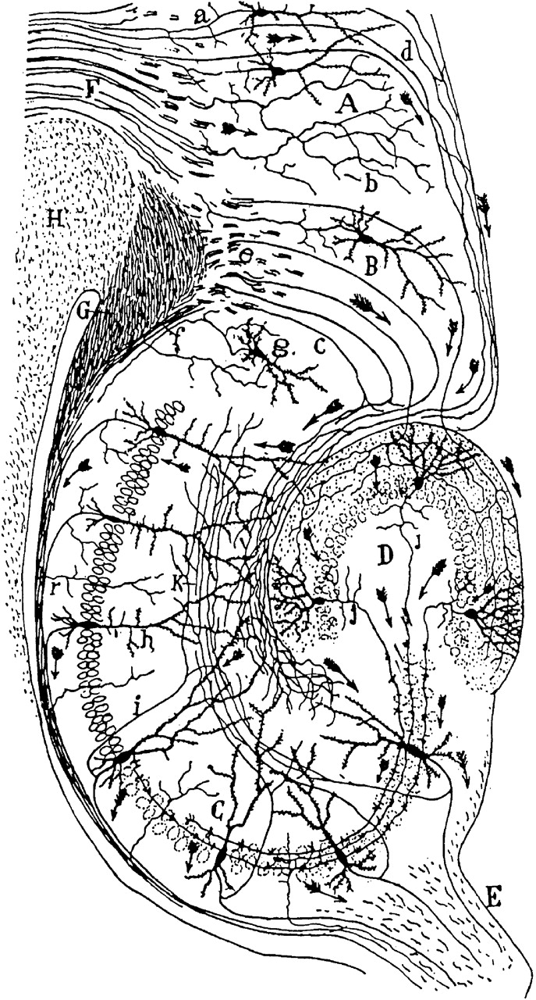

Psicologia clínica · Neuropsicologia
Nívea de Mattos
Psicoterapia para entender como sua mente funciona, a ansiedade que não desliga, sua atenção e sua memória, e por que você age como age.
Atendimento psicológico para adultos, com base na neurociência e no cuidado com a história de cada pessoa.
01 Sobre mim
Acredito que compreender nosso funcionamento pode abrir caminhos para mudanças mais conscientes e consistentes.
Sou psicóloga clínica, com foco em neuropsicologia. Atendo principalmente adultos que querem entender melhor o que sentem, como pensam e por que agem como agem.
Gosto de estudar saúde mental, neurociência, comportamento e psicopatologia, e de levar esse conhecimento para o consultório de forma acessível, sem perder a complexidade que cada pessoa carrega.
- Formação
- Psicologia · [Universidade, ano]
- Registro
- CRP 00/000000
- Público
- Adultos
- Atendimento
- Online e presencial · [Cidade]
02 Neuropsicologia
O que acontece no cérebro aparece no jeito de pensar, sentir e agir.
A neuropsicologia estuda a relação entre o funcionamento do cérebro e o comportamento: atenção, memória, linguagem, planejamento, controle das emoções. Quando alguma dessas funções não vai bem, a vida inteira sente: no trabalho, nos estudos, nas relações.
A avaliação neuropsicológica é um processo estruturado, com entrevistas, testes e escalas, que mostra como cada uma dessas funções está: o que é força e o que pede cuidado. O resultado orienta o tratamento e as decisões do dia a dia.
Quando procurar
- Dificuldade de manter a atenção ou concluir tarefas
- Esquecimentos que atrapalham a rotina
- Suspeita de TDAH na vida adulta
- Mudanças de comportamento, humor ou memória
- Pedido de laudo para escola, trabalho ou outros profissionais

“Todo ser humano pode ser, se assim se propuser, escultor do próprio cérebro.”
03 Como eu trabalho
Um processo sem pressa, construído com você.
-
01
Primeira conversa
Um encontro para você contar o que está vivendo, entender como o atendimento funciona e tirar dúvidas. Sem compromisso de continuar.
-
02
Avaliação ou psicoterapia
Conforme a sua demanda, seguimos com avaliação neuropsicológica, psicoterapia ou as duas. Na avaliação, investigamos com cuidado atenção, memória, emoções e comportamento. Na terapia, entendemos padrões e construímos estratégias juntos.
-
03
Pequenos passos todos os dias geram grandes transformações.
Acompanhamento
Revisamos o caminho de tempos em tempos e ajustamos o que for preciso. Mudança se constrói com repetição e tempo, e o cérebro também: é a plasticidade que permite aprender novos jeitos de pensar e agir.
04 Temas que atendo
O que costuma trazer as pessoas até aqui.
Cada história é única, mas algumas queixas aparecem com frequência no consultório. Se você se reconhece em alguma delas, vale conversar.
- 01
Ansiedade e crises de pânico
Preocupação constante, sintomas físicos, medo de que algo dê errado.
- 02
Atenção e TDAH em adultos
Dificuldade de foco, de organização e de concluir o que começa.
- 03
Memória e queixas cognitivas
Esquecimentos que atrapalham o trabalho, os estudos ou a rotina.
- 04
Humor e desmotivação
Tristeza persistente, falta de energia, mudanças de humor constantes.
- 05
Relacionamentos
Conflitos, padrões que se repetem, dificuldade de se posicionar.
- 06
Autoestima e autocobrança
Sensação de nunca ser suficiente, perfeccionismo, insegurança.
Como funciona a primeira sessão?
É um encontro para nos conhecermos. Você conta o que te trouxe até aqui, eu explico como trabalho e combinamos juntos os próximos passos. Não precisa chegar com tudo organizado: a gente organiza junto.
O atendimento é online ou presencial?
Os dois. O presencial acontece em [endereço / cidade] e o online é feito por videochamada, de onde você estiver.
Quanto tempo dura cada sessão?
Cada sessão dura cerca de [50 minutos]. A frequência é combinada entre nós, geralmente uma vez por semana.
Qual é o valor da sessão?
[Valor da sessão]. Emito recibo, que pode ser usado para pedir reembolso ao plano de saúde, conforme as regras do seu plano.
Como funciona a avaliação neuropsicológica?
São alguns encontros com entrevistas, testes e escalas, seguidos de uma sessão de devolutiva em que explico os resultados. Ao final, você recebe um laudo. O número de encontros varia conforme o objetivo da avaliação: [em média X sessões].
O que eu falo fica em sigilo?
Sim. O sigilo é um dever ético da psicóloga, previsto no Código de Ética Profissional do Psicólogo. O que é dito nas sessões fica entre nós.
Agende seu horário
Atendimento presencial e online. Me chame no WhatsApp para tirar dúvidas ou marcar a primeira conversa.